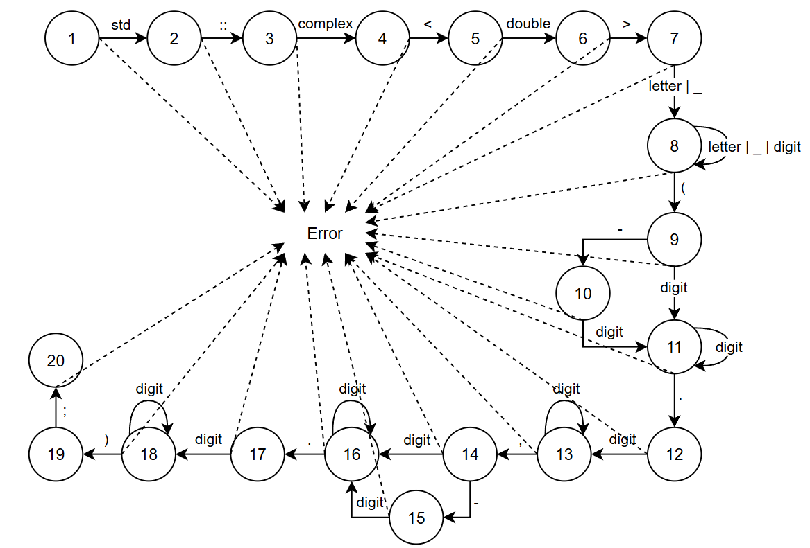

Грамматика G[‹Std›] является автоматной. Правила (1) – (19) для G[‹Std›] реализованы на графе:

Сплошные стрелки на графе характеризуют синтаксически верный разбор; пунктирные символизируют состояние ошибки (ERROR).
На главную